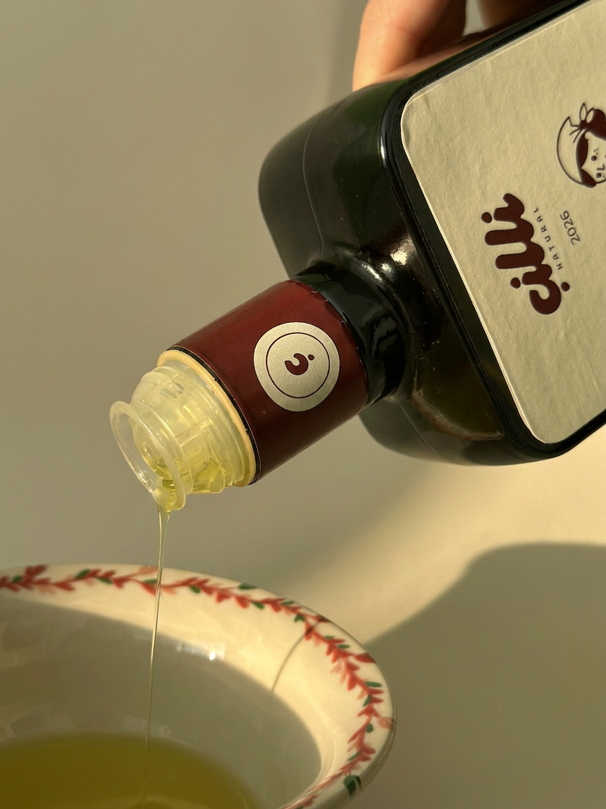
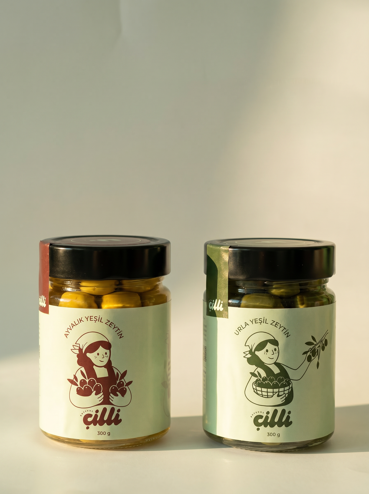
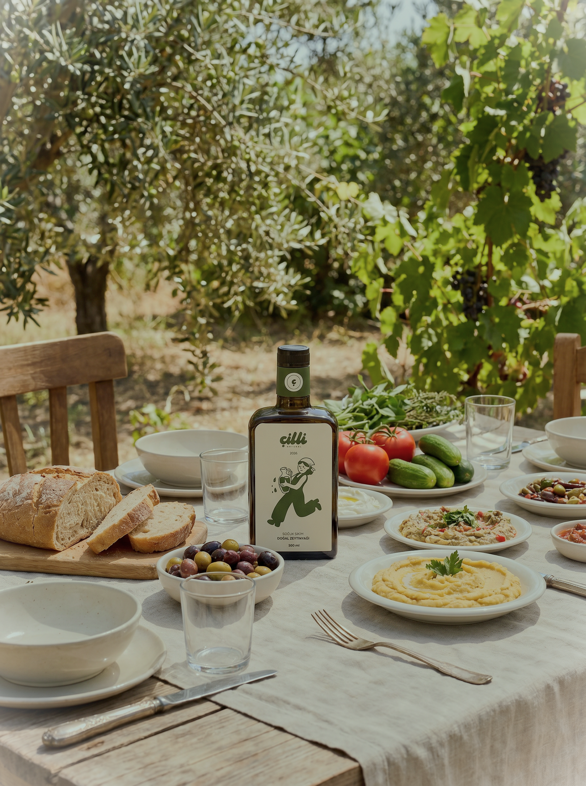

Köklerimizden
Geleceğimize
Bir zamanlar zeytin ağaçlarının gölgesinde büyüyen biz şimdi toprağın ritmine kulak vererek, onu incitmeden üretmeyi, insan emeğini görünür kılmayı ve sizleri bu döngünün bir parçası haline getirmeyi amaçlıyoruz.

Doğadan Aldığını
Doğaya Geri Veren
Çilli'nin hikayesi, doğayla kurulan karşılıklı bir bağın hikayesi. Zeytin ağaçlarından gelen her ürün, sadece bir hasat değil; aynı zamanda bir sorumluluk. Bu yüzden üretirken doğayı korumayı, desteklemeyi ve ona iyi bakmayı önceliğimiz haline getiriyoruz.

Neyi Hedefliyoruz?
Çilli Natural olarak biz, yalnızca zeytinyağı üreten bir marka olmanın ötesinde, doğayla kurulan bağı günlük yaşama taşıyan bir yaklaşım sunuyoruz. Zeytinyağlı dudak nemlendiricisi, zeytin derisinden defter gibi ürünler bu anlayışın bir uzantısı. Doğadan gelen değerin farklı formlarda yeniden hayat bulmasını istiyoruz.
Amacımız, doğayı sadece bir kaynak olarak görmek yerine onunla sürdürülebilir bir ilişki kurmak. Bu ürünler, "doğadan al, doğaya iyi bak" fikrini somutlaştırarak günlük yaşamın içine taşıyor ve kullanıcıya bir üründen çok bir duruşun parçası olma deneyimi sunuyor.